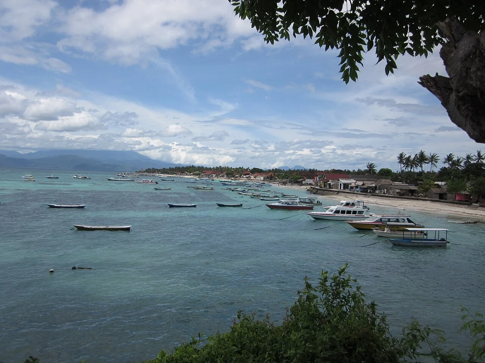

Nusa Lembongan
Bali, Indonésie · surf, snorkeling, plongée

Une petite île au sud-est de Bali, voisine de Nusa Ceningan et de Nusa Penida. Entre les plages et les départs en bateau, plusieurs centres permettent de préparer une session de surf ou une sortie sous l’eau.
- Lieu
- Bali, Indonésie
- Niveau
- Variable selon les conditions
- Activités
- surf, snorkeling, plongée
- Type d'eau
- Mer / océan
- Coordonnées
- -8.67, 115.45 (position approximative du secteur)
Ouvrir dans Ocean Buddy Télécharger sur l'App Store
Source : Wikipédia · géographie du lieu.